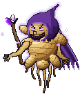
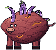
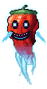

Bosses
The big fights, each with its own mechanics.

The GingerA flying ginger-root sorcerer that rules the burrow's hub. It can't be hurt until the squad brings back the three key orbs, and every orb unlocks more of its health and more of its fury.
Sweet PotatoThe top-room boss of the Burrow Encounter, a huge rosy sweet potato bull that chains charges into the walls, sends shockwaves along the floor and ambushes from underground. Red CornThe middle-room boss of the Burrow Encounter, a towering red-and-black ear of corn that sprays scissoring kernel streams, lobs popcorn mortars that leave burning patches, and slams its husk into the ground.
Red CornThe middle-room boss of the Burrow Encounter, a towering red-and-black ear of corn that sprays scissoring kernel streams, lobs popcorn mortars that leave burning patches, and slams its husk into the ground.
Ghost PepperA dead bhut jolokia come back as a cartoon ghost. It floats, phases through bullets, teleports behind you, breathes ghost fire and looses homing wisps. The burrow's bottom-room boss. Ginger ShadeThe Ginger's immune spectral projection. It haunts whichever boss room the squad is fighting in and harasses the players there with telegraphed bolt fans.
Ginger ShadeThe Ginger's immune spectral projection. It haunts whichever boss room the squad is fighting in and harasses the players there with telegraphed bolt fans.